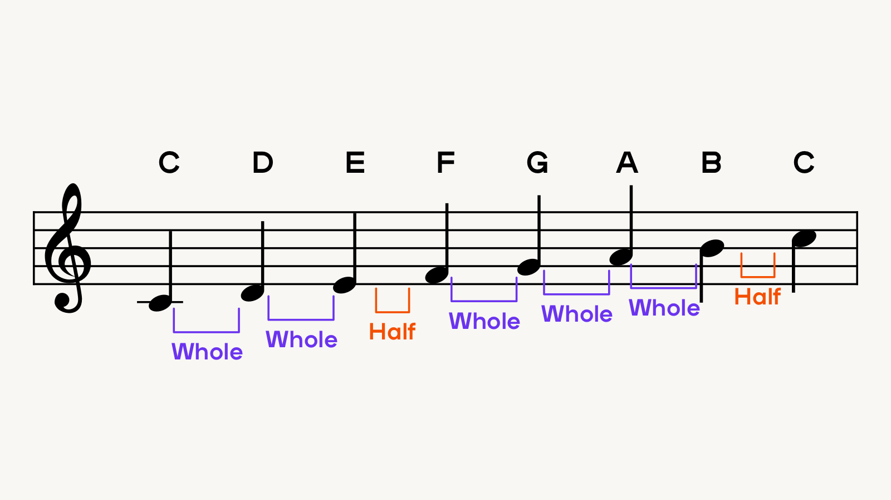
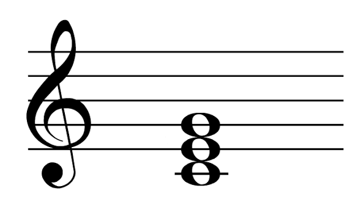
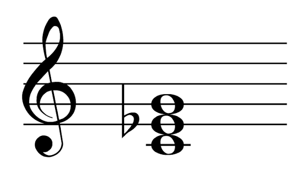
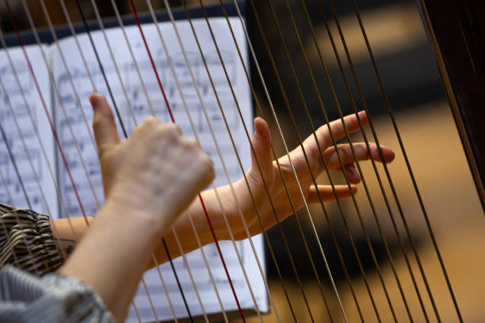

Music Theory
What is a scale?
A scale is a group of notes that harmonically work together. These groups are found based on patterns of intervals you can follow up the notes. The intervals are whole steps (W) and half steps (h) that you take up the 12 chromatic notes (C#, D, D#, E, F, F#, G, G#, A, A#, B, C) where whole steps are two notes and half steps are just one note. The name of any scale depends on the pattern you follow and the note you start on. For example, C Major scale follow the major pattern (WWhWWWh) and starts on C. Therefore, the C Major scale is: C, D, E, F, G, A, B, C.

Chords

Chords are combinations of three or more notes. These notes, when played together, sound harmonically good and form the basis of all music. A triad is a chord of specifically three notes: the root, a major third (four half steps from the root), and a perfect fifth (seven half steps from the root). Chords are mostly based on scales. For example, the C Major triad is: C, E, G. A minor triad is almost the same as a major triad, but the major third is replaced with a minor third (three half steps) giving us C Minor triad: C, D#, G.

How can we classify instruments?
The Hornbostel-Sachs is the most widely used system of instrumental classification. It classifies instruments based on the way they are played and sound is produced. There are many subcategories but it has four main broad classifications: Idiophones, Membranophones, Chordophones, and Aerophones.
